03: ordered containers #2
XOR Lists | Subtraction Lists | CDR Coding | Skip Lists | Self Organizing Lists
Dequeue | Sparse Tables | List vs. Dequeue Performance
XOR Lists [2]
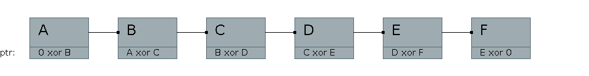
Addresses in binary
| Node |
Addr |
Binary |
| A |
1 |
0001 |
| B |
2 |
0010 |
| C |
3 |
0011 |
| D |
4 |
0100 |
| E |
5 |
0101 |
| F |
6 |
0110 |
At Node B:
- A xor C = 0010
- If prev node is A: A xor (A xor C) = 0001 xor 0010 = 0011
- If prev node is C: C xor (A xor C) = 0011 xor 0010 = 0001
Problems:
- Cannot use in managed languages such as C# or Java
- Cannot start following chain from the middle
- Code is complex and maybe difficult to understand
Even with these problems, I have heard of this being an interview
question.
A solution to these problems is to use dequeues.
subtraction linked lists [2]
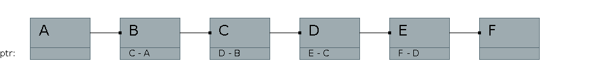
- Going forwards: Previous pointer is added to pointer
- Going reverse: Previous pointer is subtracted from pointer
Subtraction Linked Lists can be relocated in memory without needing to
patch pointer values. This is in contrast to normal and XOR linked
lists.
compressed data representation (cdr) coding [3]
If a structure ends with a pointer to a structure, place the structure right at the end of the original structure
struct _cl_program {
cl_ulong m_id;
cl_context m_context;
cl_long m_referenceCount;
cl_uint m_numDevices;
struct _cl_program_exe_s {
cl_device_id m_device;
void * m_driverSpecific;
} m_exes[1];
};
(see: https://github.com/pcpratts/gcc_opencl/blob/master/cl/cl_internal.h)
When allocating _cl_program in C, you calculate how many elements _cl_program_exe_s has and put those into malloc:
struct * _cl_program prog =
(struct * _cl_program) malloc(sizeof(struct _cl_program) +
((count-1) * sizeof(struct _cl_program_exe_c)));
skip lists
Skip Lists reduce the time to complete a linear search of a linked list.
Insertion
- Start:
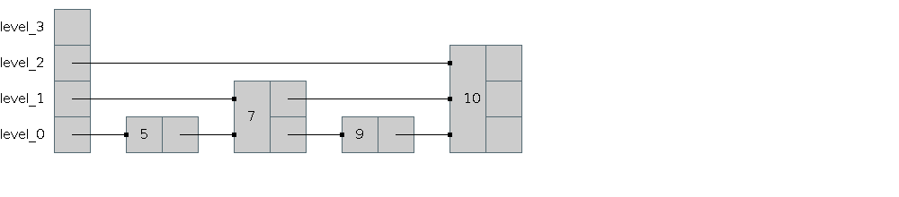
- Create a randomly sized node
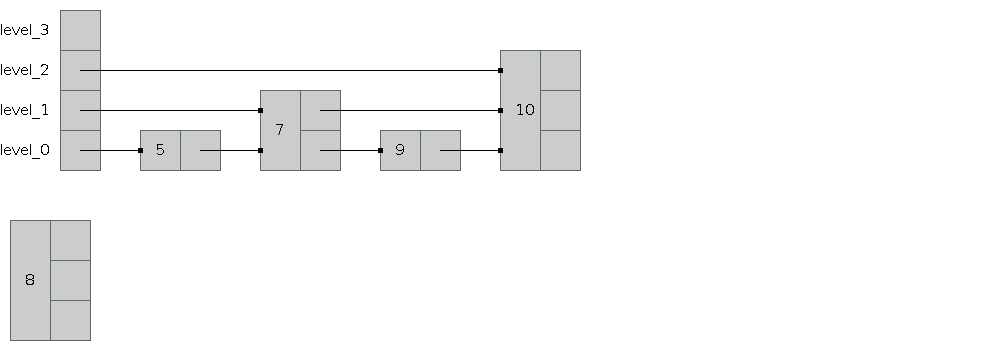
- Connect the next pointers
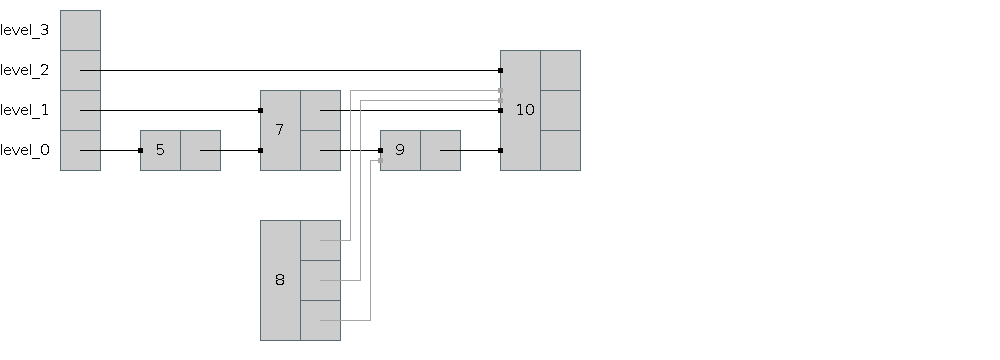
- Connect the prev pointers
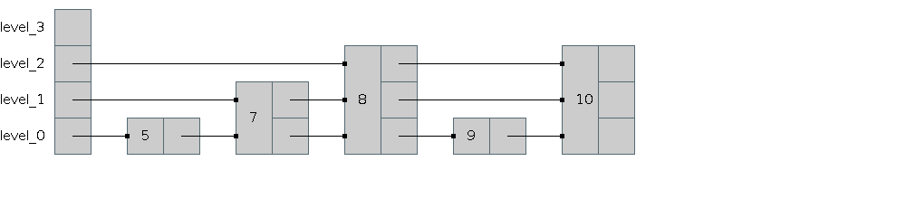
self organizing lists [4]
Regular linked lists, but the ordering is changed depending on the access pattern.
Types of Self Organizing Lists
- Move-to-Front: Whenever an item is accessed, it is moved to the front
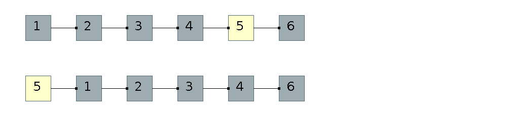
- Transpose: After a desired element is located, swap it with its predecessor unless it is at the head
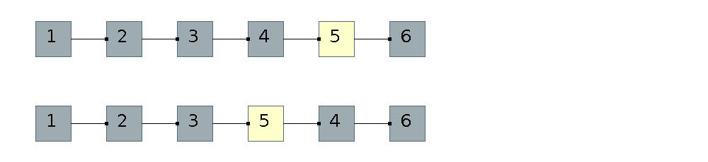
- Count: Order the items from highest frequency accessed to lowest frequency
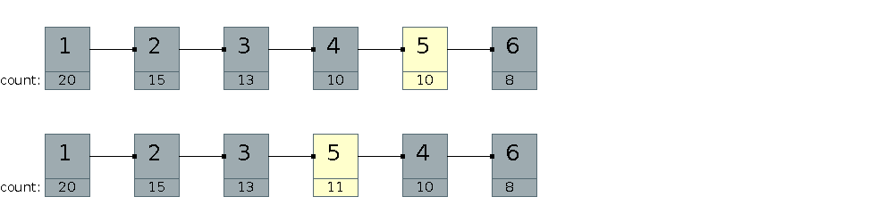
- Ordering: Maintain some application specific ordering (such as sorted)
Time Complexity of Self Organizing Lists
- Average Case
- It can be shown that the average case time complexity is: (p(n) is the probability of accessing each element)
Tavg = 1 * p(1) + 2 * p(2) + 3 * p(3) + ... + n * p(n).
-
If p(n) is uniform:
T(n) = 1 / n + 2 / n + 3 / n + ... + n / n
T(N) = (1 + 2 + 3 + ... + n) / n
T(n) = (n + 1) / 2
- If p(n) has some heavily weighted elements and the heavy elements are at the front the performance is much better
- Worst Case
- The worst case is linear time or O(n)
- This happens when the desired element is at the end of the list
- Best Case
- The worst case is constant time or O(1)
- This happens when the desired element is at the front of the list
sparse table
- Sparse Tables are Linked Lists of 2 or more dimensions
- A similar concept is sometimes useful in operating systems kernels (FreeBSD uses the idea)
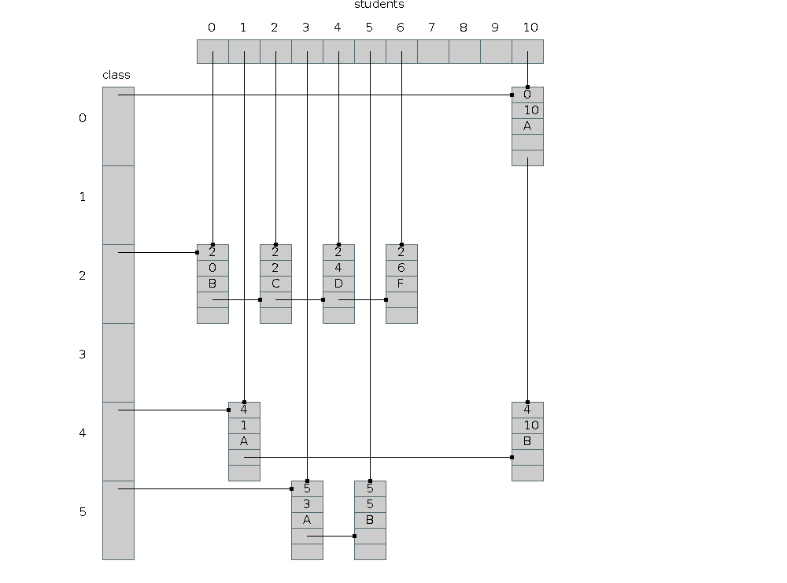
- Linear Search of Classes Students are in is Easy
- Linear Search of Students in Classes is Easy
c++ deque
- A deque is a double-ended queue
- Insertion at the front and back is fast
- Random access is fast
- Start:
- push_front(0);
- push_front(1);
push_front(2);
push_front(3);
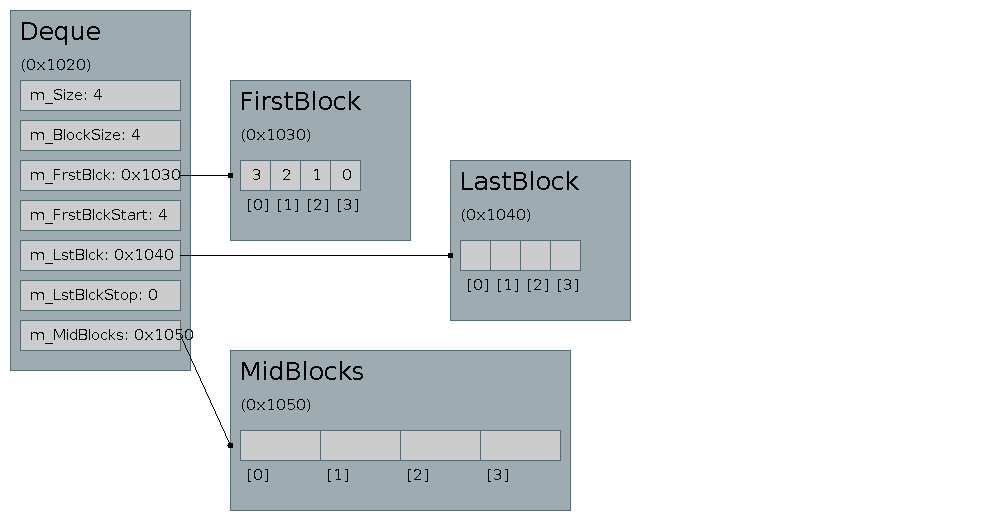
- push_front(4);
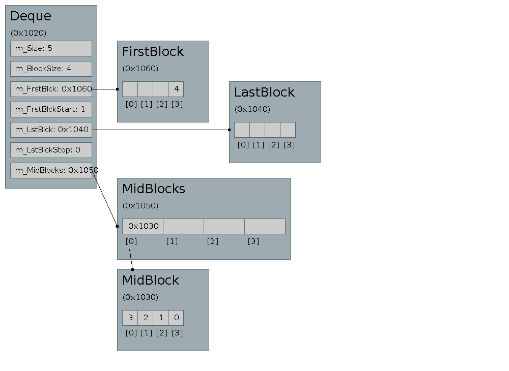
- push_back(0);
- push_back(1);
push_back(2);
push_back(3);
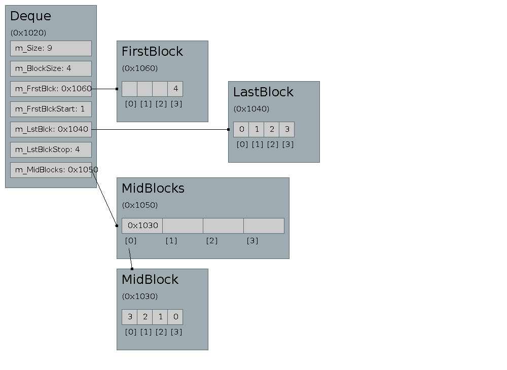
- push_back(4);
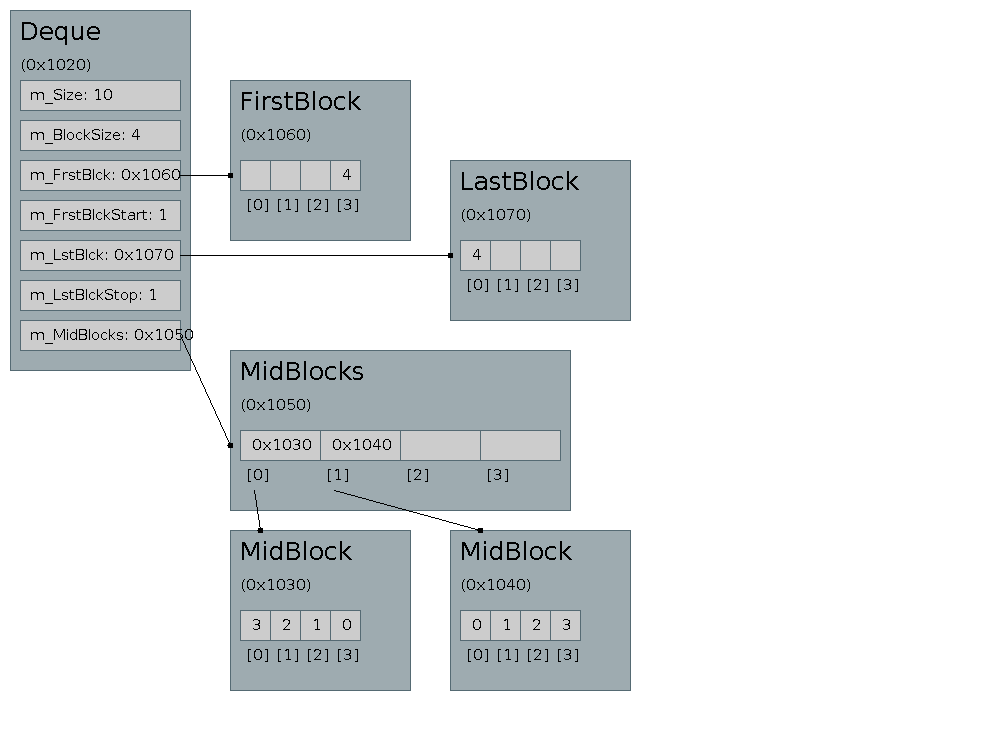
- push_front(5);
push_front(6);
push_front(7);
push_front(8);
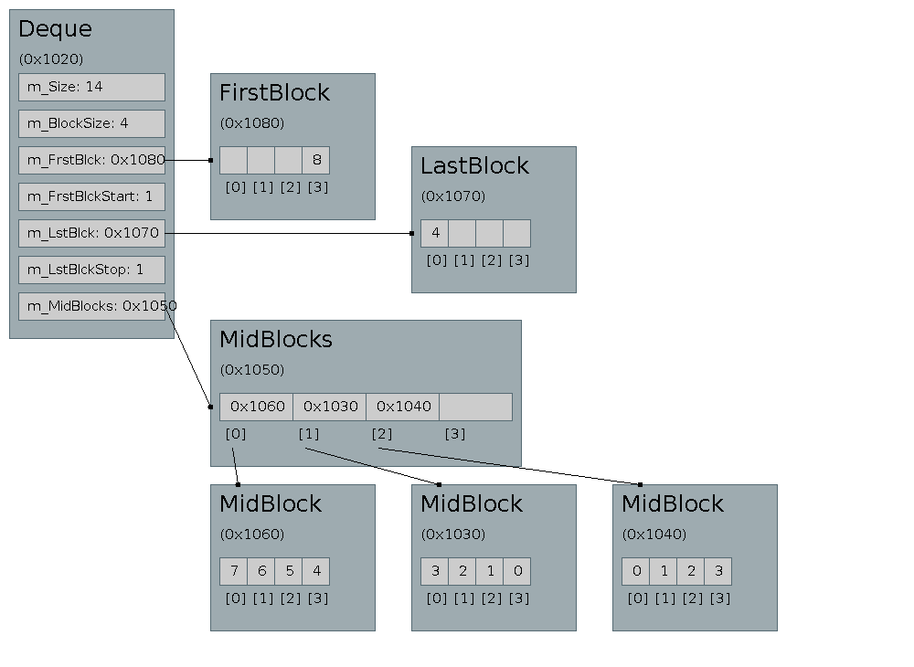
- C++ deque usage
1:
2:
3:
#include
<
deque>
4:
#include
<
iostream>
5:
6:
int
main(
int
argc,
char
*
argv[
]
)
{
7:
8:
std:
:
deque<
int
>
dq1;
9:
dq1.push_front(
1)
;
10:
dq1.push_front(
2)
;
11:
dq1.push_back(
3)
;
12:
13:
for
(
size_t
i
=
0;
i
<
dq1.size(
)
;
++i)
{
14:
std:
:
cout
<
<
dq1[
i]
<
<
" "
;
15:
}
16:
17:
return
0;
18:
}
- Deque Algorithms
1:
2:
void
Deque:
:
push_back(
int
value)
{
3:
if
(
m_LastBlockStop
==
m_BlockSize)
{
4:
m_MiddleBlocks.push_back(
m_LastBlock)
;
5:
m_LastBlockStop
=
0;
6:
m_LastBlock
=
new
int
[
m_BlockSize]
;
7:
}
8:
m_LastBlock[
m_LastBlockStop]
=
value;
9:
++m_LastBlockStop;
10:
++m_Size;
11:
}
12:
13:
void
Deque:
:
push_front(
int
value)
{
14:
if
(
m_FirstBlockStart
==
m_BlockSize)
{
15:
m_MiddleBlocks.push_front(
m_FirstBlock)
;
16:
m_FirstBlockStart
=
0;
17:
m_FirstBlock
=
new
int
[
m_BlockSize]
;
18:
}
19:
m_FirstBlock[
m_BlockSize
-
m_FirstBlockStart
-
1]
=
value;
20:
++m_FirstBlockStart;
21:
++m_Size;
22:
}
23:
24:
int
*
Deque:
:
getBlock(
int
block_index)
{
25:
std:
:
list<int
*>
:
:
iterator
iter
=
m_MiddleBlocks.begin(
)
;
26:
for
(
int
i
=
0;
i
<
block_index;
++i)
{
27:
++iter;
28:
}
29:
return
*iter;
30:
}
31:
32:
int
Deque:
:
get(
int
index)
{
33:
if
(
index
<
m_FirstBlockStart)
{
34:
int
block_index
=
m_BlockSize
-
m_FirstBlockStart
+
index;
35:
return
m_FirstBlock[
block_index]
;
36:
}
else
if
(
index
<
m_Size
-
m_LastBlockStop)
{
37:
index
-=
m_FirstBlockStart;
38:
int
block
=
index
/
m_BlockSize;
39:
int
*
curr
=
getBlock(
block)
;
40:
int
item
=
index
%
m_BlockSize;
41:
return
curr[
item]
;
42:
}
else
{
43:
int
last_index
=
index
-
m_FirstBlockStart
-
(
m_MiddleBlocks.size(
)
*
m_BlockSize)
;
44:
return
m_LastBlock[
last_index]
;
45:
}
46:
}
47:
references
- Adam Drozdek. "Data Structures and Algorithms in C++"
- http://en.wikipedia.org/wiki/XOR_linked_list
- http://en.wikipedia.org/wiki/CDR_coding
- http://en.wikipedia.org/wiki/Self-organizing_list